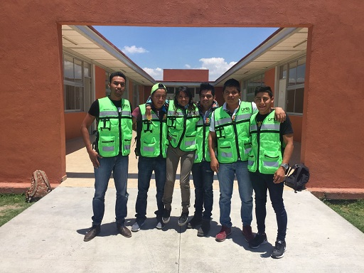
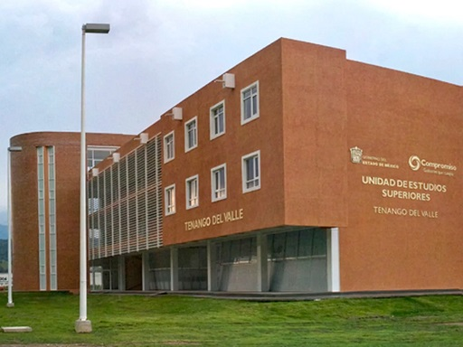

Inicio
Bienvenido, estas por concluir tus estudios de nivel medio superior, y no sabes que escuela elegir, pues explora nuestra pagina web y descubre la gran oferta educativa que tiena la UMB Tenango del Valle, y conoce mas sobre nosotros. El Gobierno del Estado de México brinda a la juventud mexiquense nuevas oportunidades de Educación Superior a través de la Universidad Mexiquense del Bicentenario.
Misión
“La Universidad Mexiquense del Bicentenario es una institución de carácter público, en busca de la excelencia académica, enfocada a la formación integral de profesionistas con conocimientos, habilidades, competencias, vocación de transformación social y un amplio sentido de la vida; con plena conciencia de la situación regional, estatal y nacional, capaces de desempeñarse eficientemente, con valores universitarios y comprometidos con el desarrollo sustentable, económico, científico, tecnológico y cultural de la humanidad”.
Visión
“Ser la Institución de Educación Superior del Estado de México reconocida por su excelencia académica, comprometida con las necesidades, intereses y requerimientos de la sociedad, contribuyendo al desarrollo regional, estatal y nacional”.
Vision
“Ser la Institución de Educación Superior del Estado de México reconocida por su excelencia académica, comprometida con las necesidades, intereses y requerimientos de la sociedad, contribuyendo al desarrollo regional, estatal y nacional”.
Valores
-
Humanismo
Se fundamenta en el valor de los seres humanos, dándole mayor importancia al pensamiento crítico y a lo racional, impulsando las potencialidades de la comunidad universitaria para ofrecer a la sociedad profesionales más justos, de trato equitativo, que fomenten los valores humanos, ante los procesos culturales y sociales.
-
Verdad
Es el fundamento del auténtico conocimiento y de la persona en la que no hay doblez. Indispensable para una Institución Educativa.
Compromiso
Comprometerse va más allá de cumplir con una obligación, es poner en juego nuestras capacidades para sacar adelante todo aquello que se nos ha confiado. Es un aspecto fundamental del emprendedor.
-
Lealtad
Cumplimiento de lo que exigen las leyes de la fidelidad y las del honor, es el amor y la gratitud que muestran las personas hacia sus amigos, padres, compañeros, etc. Aspecto fundamental para la persona del siglo XXI.
-
Servicio
Brindar ayuda de manera espontánea en los detalles pequeñosde manera diligente; habla de nuestro alto sentido de colaboración para hacer la vida más ligera a los demás. Fundamento de la auténtica vocación.
-
Trascendencia
Fundamento para rebasar los paradigmas establecidos y buscar nuevos significados del conocimiento, la verdad, la belleza. Es el detonante de una auténtica espiritualidad.

Objetivos
• Fomentar la Calidad y Pertinencia de la Oferta Educativa”.
• “Orientar la Investigación Científica y el Desarrollo Tecnológico hacia las prioridades regionales del Estado de México”.
• “Promover la Extensión Universitaria en todos sus ámbitos”.
• “Modernizar la Gestión Institucional”.
• La Universidad Mexiquense del Bicentenario es la respuesta concertada de los Gobiernos Federal y Estatal a las demandas de nuestra población mexiquense, permitiendo incursionar en el impulso de un nuevo modelo educativo congruente con las necesidades de la entidad, que se constituirá en sí mismo como un vehículo de desarrollo social que permita a los mexiquenses ejercer el derecho a obtener un mejor nivel de vida.
• Para el logro de ello, se establecieron como sus funciones:

• I. Impartir educación superior en sus niveles de Licenciatura, Especialización, Maestría y Doctorado con validez oficial para formar integralmente profesionales competentes con un amplio sentido ético, humanístico y nacionalista, con un elevado compromiso social y aptos para generar y aplicar creativamente conocimientos en la solución de problemas;
• II. Organizar y realizar actividades de investigación en las áreas en las que ofrezca educación, atendiendo fundamentalmente los problemas estatales, regionales y nacionales, en relación con las necesidades del desarrollo socioeconómico de la entidad;
• III. Formar individuos con actitud científica, creativos, con espíritu emprendedor, innovador, orientados al logro y a la superación personal permanente, solidarios, sensibles a las realidades humanas, integrados efectivamente y comprometidos con el progreso del ser humano, del país y del Estado.
En alcance a lo dispuesto por el artículo 3 del Decreto de creación, la Universidad Mexiquense de Bicentenario, para el cumplimiento de su objeto, tiene las siguientes atribuciones:
• I. Adoptar la organización administrativa y académica que estime conveniente, de acuerdo con los lineamientos previstos en este decreto;
• II. Coordinar la impartición de educación superior de carácter tecnológica en las áreas industriales y de servicios, así como educación de superación académica alterna y de actualización;
• III. Diseñar y ejecutar su plan institucional de desarrollo;
• IV. Formular y modificar, en su caso, sus planes y programas de estudio, estableciendo procedimientos de acreditación y certificación de estudios para someterlos a la autorización de la Secretaría de Educación Pública;
• V. Establecer, organizar, administrar y sostener planteles en los lugares que el Ejecutivo del Estado estime convenientes y necesarios, por conducto de la Secretaría de Educación, previo estudio de factibilidad;
• VI. Establecer los procedimientos de ingreso, permanencia y promoción de su personal académico;
• VII. Regular los procedimientos de selección e ingreso de los alumnos y establecer las normas para su permanencia en la Universidad;
• VIII. Revalidar y reconocer estudios, así como establecer equivalencias de los realizados en otras instituciones educativas, de conformidad con el Sistema Nacional de Créditos;
• IX. Expedir constancias y certificados de estudios, títulos profesionales y grados académicos, así como otorgar distinciones profesionales;

• X. Estimular al personal directivo, docente, administrativo y de apoyo para su superación permanente, favoreciendo la formación profesional en cada nivel;
• XI. Organizar y desarrollar programas de intercambio académico y colaboración profesional con organismos e instituciones culturales, educativas, científicas o de investigación nacionales o extranjeros;
• XII. Regular el desarrollo de sus funciones sustantivas, docencia, investigación, difusión cultural y vinculación con los sectores público, privado y social;
• XIII. Prestar servicios de asesoría, de elaboración de proyectos de desarrollo de prototipos, de paquetes tecnológicos y capacitación técnica a los sectores público, privado y social que lo soliciten;

• XIV. Realizar actividades de vinculación a través de educación continua para beneficiar a los sectores social y productivo;
• XV. Elaborar programas de orientación educativa constantes y permanentes;
• XVI. Colaborar con los sectores público, privado y social en la consolidación del desarrollo tecnológico y social de la comunidad.
• XVII. Promover la cultura regional, estatal, nacional y universal;
• XVIII. Promover un mejor aprovechamiento social de los recursos naturales y contribuir a su utilización racional;
• XIX. Expedir los reglamentos, estatutos, acuerdos y demás disposiciones que rijan a la Universidad;
• XX. Realizar los actos jurídicos necesarios para el logro de sus objetivos y el cumplimiento de sus funciones; y
• XXI. Las demás que sean necesarias para el cumplimiento de su objeto.